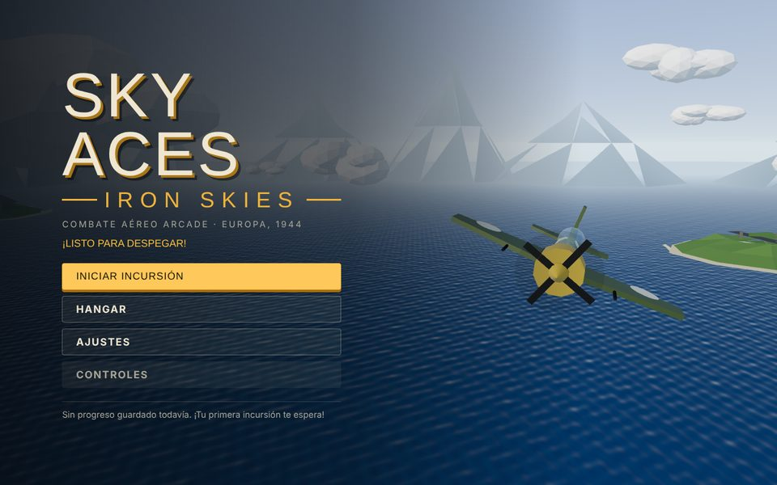

3D · Three.js ▶ Jugar ahoraCombate aéreo · Roguelite
Sky Aces: Iron Skies
Combate aéreo arcade ambientado en Europa, 1944. Vista exterior o de cabina, radar que fija blancos, mejoras entre misiones y hangar con progreso guardado.
Jugar ↗